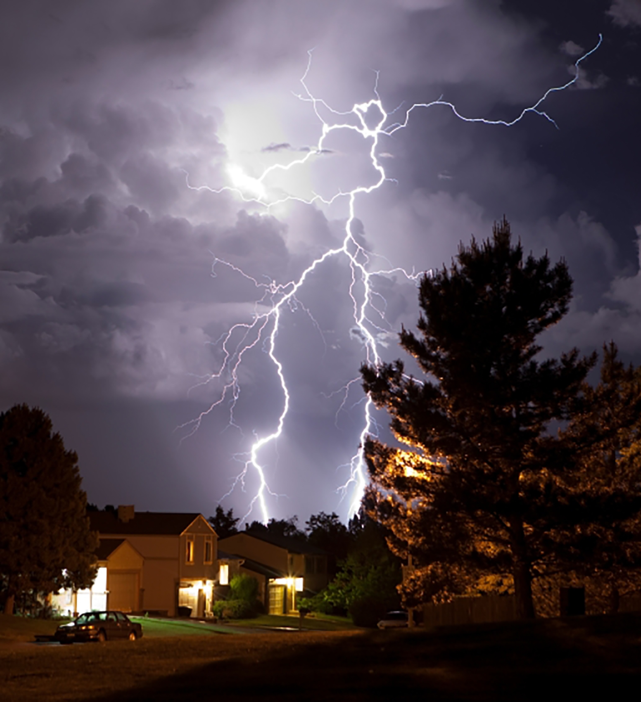
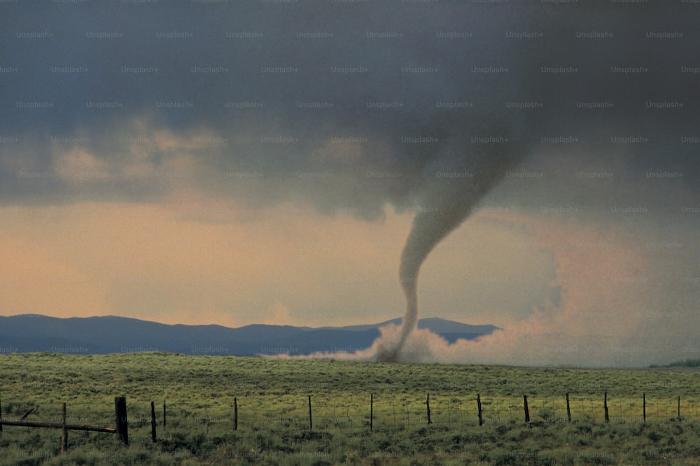
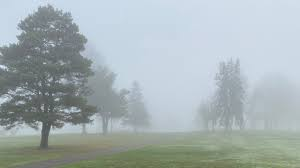
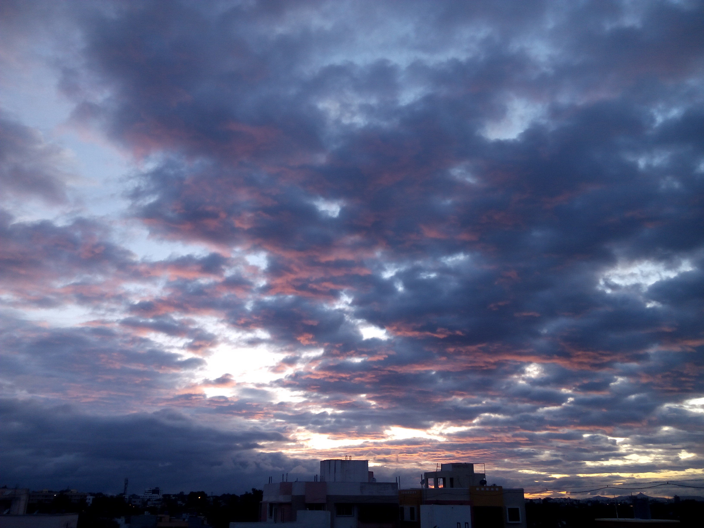
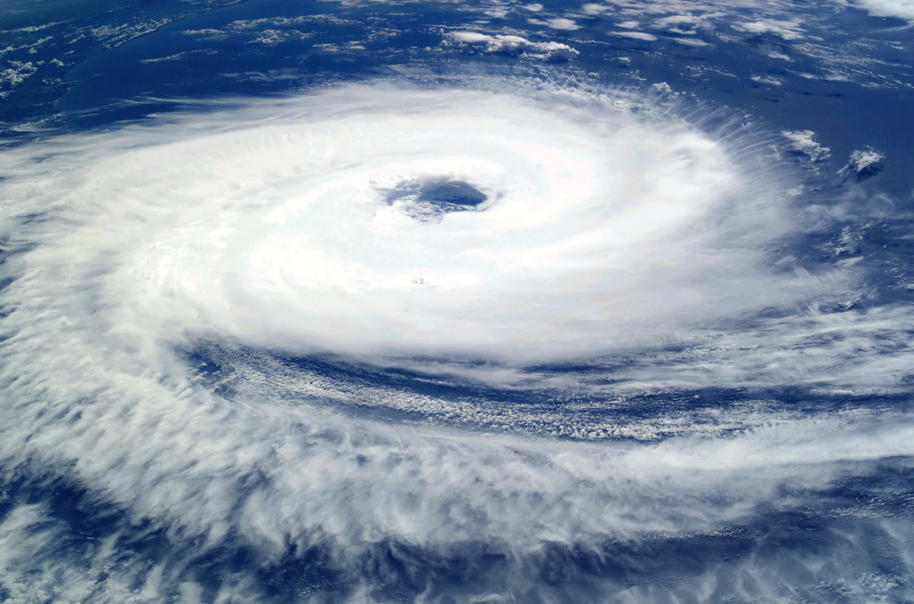
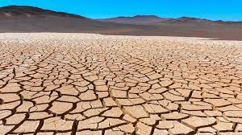
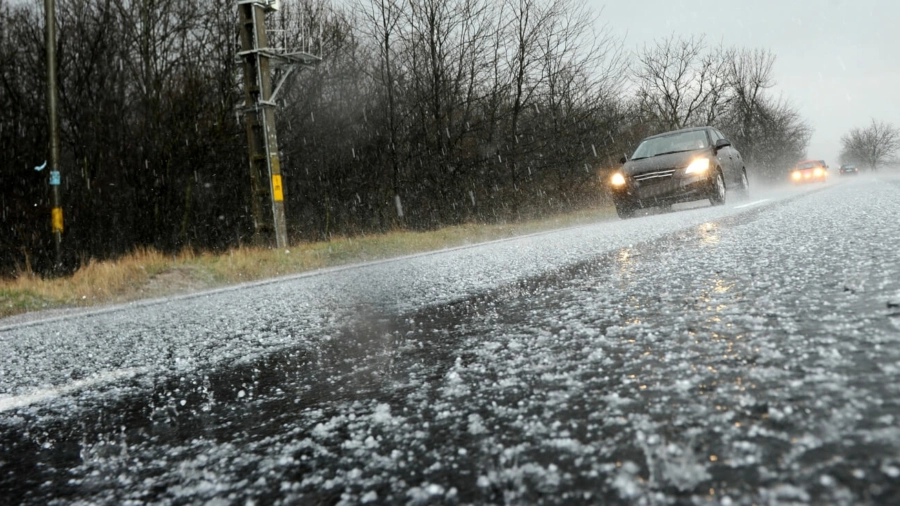

Put the mouse cursor over an image and see the magic. The images will magnify and move out of the grayscale to become coloured.
Don't forget to scroll through the images using either the buttons or mouse wheel.
Monsoon - The wet season is the time of year when most of a region's average annual rainfall occurs. Generally, the season lasts at least a month.Thunderstorm - A thunderstorm, also known as an electrical storm or a lightning storm, is a storm characterized by the presence of lightning and its acoustic effect on the Earth's atmosphere, known as thunder.Tornado - A tornado is a violently rotating column of air that is in contact with both the surface of the Earth and a cumulonimbus cloud or, in rare cases, the base of a cumulus cloud.
Fog - Fog is a visible aerosol consisting of tiny water droplets or ice crystals suspended in the air at or near the Earth's surface.Blizzard - A blizzard is a severe snowstorm characterized by strong sustained winds and low visibility, lasting for a prolonged period of time.Cloudy - When the sky is cloudy, it's so full of clouds that you can't see the sun. Clouds indicate either that rain is on the way or they could just be hiding the sun.
Cyclone - A cyclone is a large air mass that rotates around a strong center of low atmospheric pressure, counterclockwise in the Northern Hemisphere and clockwise in the Southern Hemisphere as viewed from above.Drought - A drought is a period of drier-than-normal conditions. A drought can last for days, months or years.Hail Storm - Hail is a form of solid precipitation. It consists of balls or irregular lumps of ice, each of which is called a hailstone.